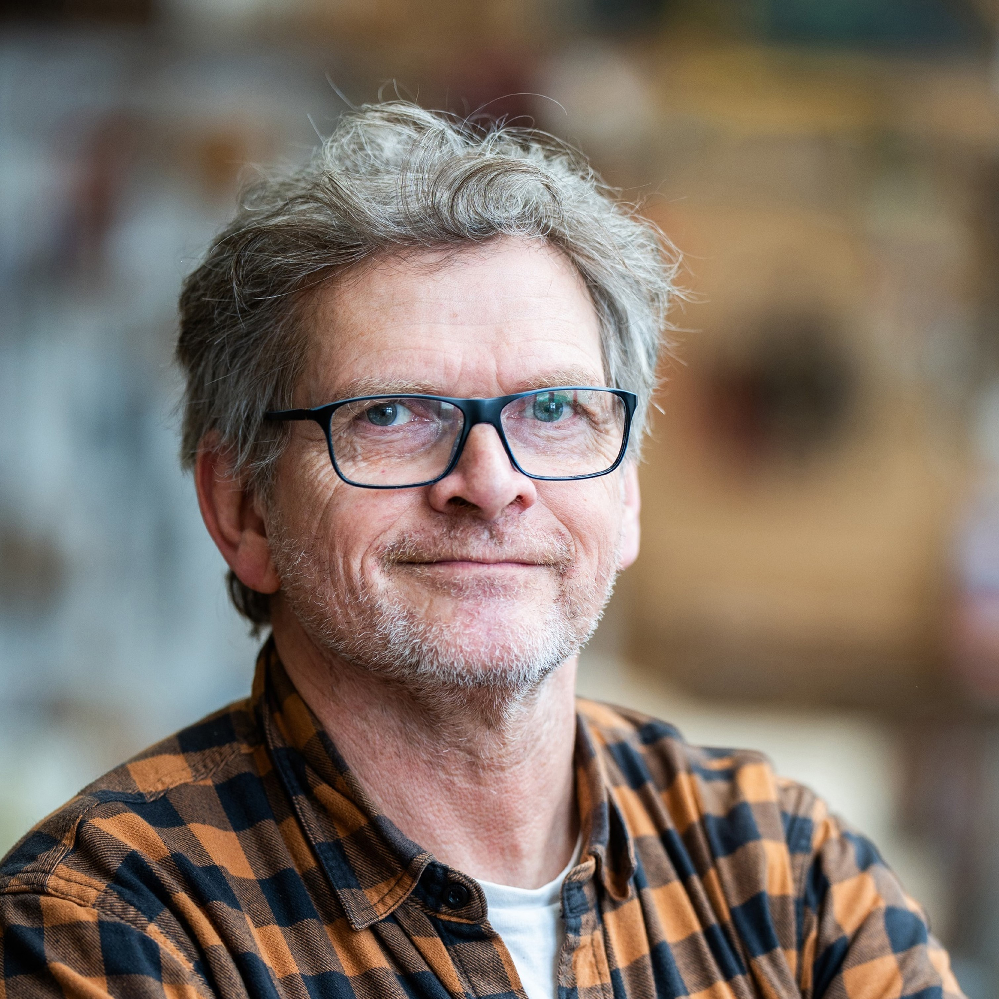

Dietmar Teßmann
In my painting, I deal in the broadest sense with architecture, or rather with the space that it creates for me. I am interested in the tensions between light and shadow and the effect they have on me, the viewer. At the same time, I am concerned with the place that the pictorial space creates, the architecture of the image, with the balance between line and surface, the relationship between color and form. I am particularly interested in the specific weights, the density that light and shadow unfold in the pictorial space. Sometimes small event spaces emerge in which objects appear and converse with the various forms.
2025 Solo exhibition at Galerie Charlie Petel, Cologne
2019 Participation in the group exhibition “Place to be” at the Kunstverein Frechen
2017 Participation in the group exhibition “Heimat-Variationen” at the Lutherkirche Cologne Südstadt
Participation in the group exhibition “Place to be” Bürgerhaus Stollwerck, Cologne
2010 Participation in the group exhibition “Galerie im Turm” Bürgerhaus Stollwerck, Cologne
2008 Solo exhibition at Galerie Charlier, Berlin
2006 Solo exhibition at Galerie Charlier, Berlin
Solo exhibition at Kunstraum Püscheid
2003 Solo exhibition at Galerie Hartmut Beck, Erlangen
Residency scholarship at Künstlerhaus Lucas, Ahrenshoop
2002 Participation in the 6th exhibition “Miniatur in der Kunst” (Miniature in Art) at the Städtische Galerie Fürstenwalde/Spree
2000 Solo exhibition at the Städtische Bühnen Münster
Solo exhibition at the Schlossbibliothek Schloss Neuhaus
1999 Solo exhibition at the E.T.A.-Hoffmann-Theater Bamberg in collaboration with the Bamberger Kunstverein
1993 Group exhibition of young stage designers at the Stadthalle Detmold
From 1988 Stays in Brittany as a painter
1983-1989 Studied at the Berlin University of the Arts (HdK), stage design class Achim Freyer, focus on theater and painting
Born in Offenbach am Main in 1962